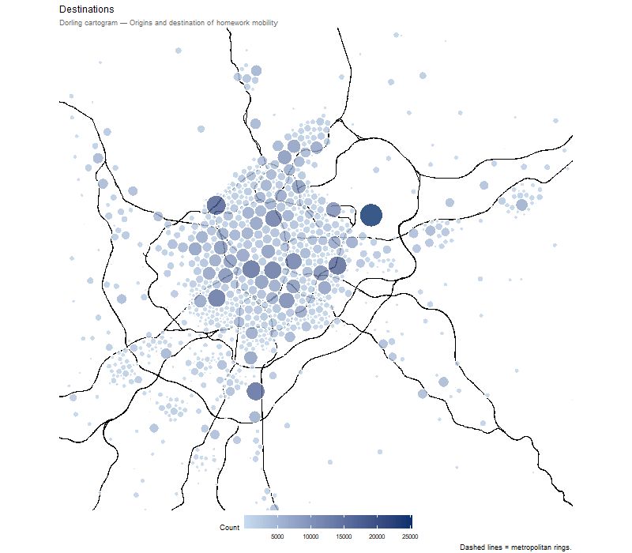
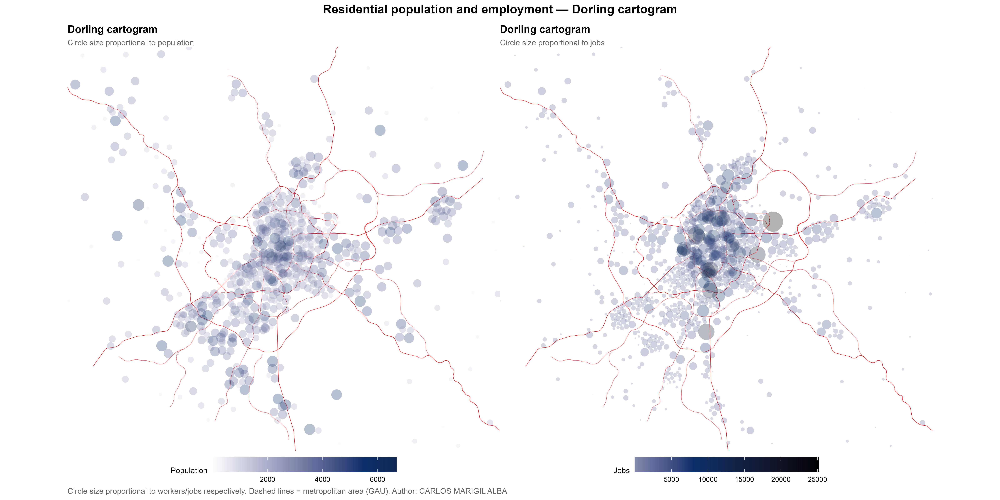
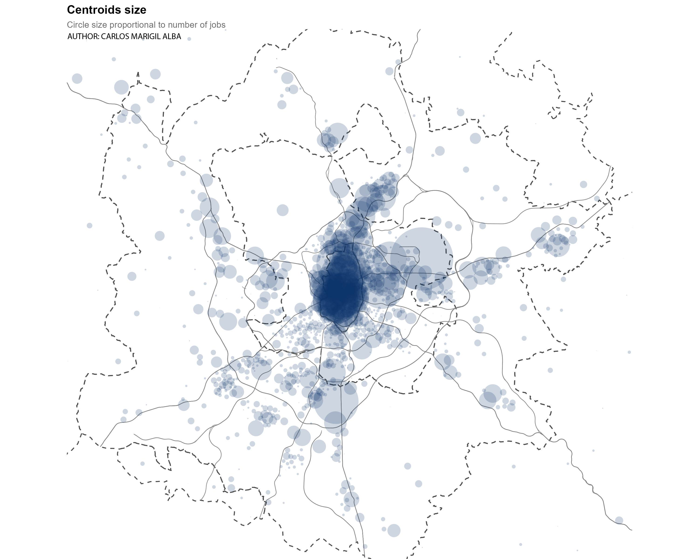

Otra España que se vacia todos los dias
Every working day, millions of commuting trips reshape the Madrid metropolitan area. The Dorling cartogram below shows the spatial distribution of residents and jobs across the 1,259 transport zones of the region, based on origin-destination data from the Madrid Household Mobility Survey (EDM 2018). Circle size is proportional to the variable of interest — population or employment — while position reflects the urban tailored centroid of each zone, preserving geographic legibility over geometric accuracy.

Every working day, millions of commuting trips reshape the Madrid metropolitan area. The Dorling cartogram below shows the spatial distribution of residents and jobs across the 1,259 transport zones of the region, based on origin-destination data from the Madrid Household Mobility Survey (EDM 2018). Circle size is proportional to the variable of interest — population or employment — while position reflects the urban centroid of each zone, preserving geographic legibility over geometric accuracy.
Three patterns stand out:
Jobs-residents asymmetry. Some cities empty out every morning while others fill up. This asymmetry reveals a deeply unbalanced territorial structure, where a large share of the workforce must travel significant distances to access employment. Notable exceptions exist — the Corredor del Henares maintains a relative equilibrium between residents and jobs — but they are precisely that: exceptions in an otherwise centripetal system.
The ring-road legacy. Madrid’s concentric infrastructure planning is clearly legible in the cartogram: a cellular lattice of population nuclei, organised around successive orbital motorways. Yet the network’s apparent isotropy conceals strong employment attractors that sit well outside the geographic centre — Barajas airport, the southern and eastern logistics corridors, and the corporate cluster along the A-1 all emerge as secondary poles of significant gravitational pull.
The post-radio-concentric turn. The classical image of Madrid as six symmetric motorway spurs radiating from a dominant centre no longer holds. The southern metropolitan area has coalesced into a large, dense conglomerate; other fingers grow in more dispersed patterns; some peripheral clusters are consolidating around local cores. Metropolitan fractality operates differently depending on where you stand — and the transport network has not always kept pace with these shifts.
And the fixed images

Cabe preguntarse entonces: ¿está la red de transporte respondiendo a esta demanda de forma eficiente? ¿Puede la ciudad imaginar un futuro donde esto cambie sin perder los beneficios que ya tenemos de la economía de aglomeración?
Hace tiempo que algunos nos preguntamos si la manera en que esto opera en el territorio es la más eficaz posible. Por un lado, todos tenemos clara la ventaja de vivir en un gran área metropolitana: la concentración de empleo maximiza las posibilidades de elección. A la población se le ofrece un pool de trabajos muy grande accesible desde casa; todo el mundo puede prosperar. Y a las empresas se les ofrece un pool de competencias y talento que permite escalar y crecer. Hasta ahí todo bien.
La cuestión es que esto no puede hacerse a costa de los mismos. El tablero está inclinado. Evidentemente, en todas las economías de aglomeración hay periferias —físicas y figuradas—, pero esto no nos debe impedir aspirar a que el territorio distribuya de una manera un poco más justa el tiempo que todos pasamos en una autovía o un tren, el número de empleos que tenemos cerca, o lo fácil que es llegar a donde necesitamos llegar. Cabe preguntarse también si estas periferias —llámese arrabal, faubourg, banlieue— son una consecuencia inevitable de la concentración del capital, como la historia ha demostrado repetidamente, o si la ciudad contemporánea puede formular ideas que lo aborden de forma diferente a lo que nos propone la suburbanización.
Las desigualdades centro-periferia pueden ser la externalidad de muchas cosas ocurriendo a la vez, y el resultado de décadas de construcción metropolitana de la región de Madrid. De la misma manera, sabemos que la organización territorial puede evolucionar para ser más eficiente para todos. El urbanismo conoce ciudades que se hunden y ciudades que prosperan, formas de construir el territorio que distribuyen mejor las externalidades positivas.
De momento, las negativas las está absorbiendo un puñado de ciudades de 200.000 habitantes que soportan más tiempo perdido, más kilómetros, más accidentes, peor calidad del aire, mayor dependencia energética y más degradación estética, mientras otras se benefician de las positivas. Por eso planear el futuro del transporte es clave para la vida de tantísima gente. Todo esto tiene además un corpus cualitativo muy importante: una policrisis que incluye la vivienda, la estrategia industrial y las percepciones políticas.
Nunca antes hubo tantos desplazamientos en Madrid, a tantos sitios diferentes. La sociologia de la movilidad es un campo amplio que se apoya en datos.
I leave my tryouts as I found some kind of carto beauty in the failed cartograms, a beatiful tool for territorial communication.

Methodological note
Residential population and employment data are derived from the Madrid transport zone system (ZT1259), comprising 1,259 zones covering the Madrid metropolitan area. Population and job counts were estimated at the zone level and spatially linked using a correspondence table between zone identifiers.
The visualisation uses Dorling cartograms, in which each zone is represented as a circle whose area is proportional to the variable of interest (residents or jobs). Unlike conventional choropleth maps, this approach avoids the visual dominance of large but sparsely populated peripheral zones, giving greater visual weight to dense urban areas.
Circle positions are initialised from urban centroids — manually adjusted points representing the built-up core of each zone — rather than geometric polygon centroids. This is particularly relevant in large peripheral zones where the geometric centroid may fall outside the inhabited area. The Dorling algorithm then repositions circles iteratively to minimise overlap while maintaining proximity to their original location.
Cartograms were computed using the cartogram R package, with k = 0.06 for residents and k = 0.015 for jobs, and itermax = 2 to allow moderate overlap and preserve geographic legibility. Road network geometry comes from the Madrid highway shapefile (autovías).
Sources:
CRTM — Madrid Household Mobility Survey, EDM 2018;
Opendata shp for roads and TAZ location.
Dorling cartogram: Jeworutzki S. (2023). cartogram. https://CRAN.R-project.org/package=cartogram
Author: Carlos Marigil Alba.